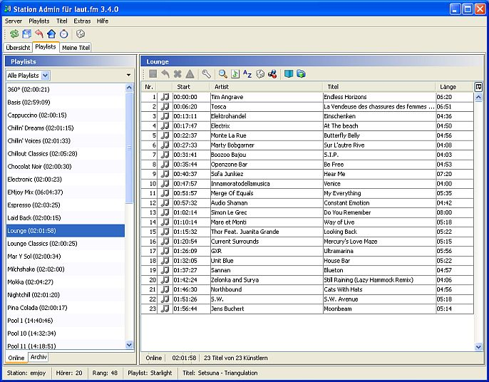
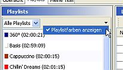

Auswahl
Wenn Du im Hauptfenster das -Tab auswählst siehst Du links eine Liste der Playlists und rechts die Details der gerade ausgewählten Playlist.
Unten kannst Du zwischen und umschalten: Online-Playlists sind die Playlists die auch bei laut.fm gespeichert sind und die Du im Sendeplan verwenden kannst. "Archiv" beinhaltet die Playlists die Du mit Station Admin archiviert hast und die nur lokal innerhalb von Station Admin abgespeichert sind. Mehr zu diesem Thema findest Du hier
Falls Du Deine Playlists mit Tags versehen hast kannst Du die Liste der angezeigten Playlists nach diesen Tags filtern. Wenn Du z. B. ein Tag für Sendungen vergeben hast oder ein Tag für Playlists die nur Deinen Titelpool behinhalten kannst Du die Liste der anzeigten Playlists entsprechend einschränken.
Optional kannst Du im Auswahlfenster auch die Playlists auch mit den Farben anzeigen die Du beim Anlegen im Radioadmin dafür festgelegt hast. Öffne dazu das Menü im dem Du auf das kleine kleine schwarze Dreieck oben rechts klickst und wähle dann .

Der Playlist-Viewer
Rechts siehst Du eine Tabelle mit den Titeln der gerade ausgewählten Playlist. Durch Klicken auf die Kopfzeile einer Spalte kannst Du die Tabelle nach jedem Kriterium umsortieren.
Du kannst Titel per Drag & Drop verschieben. Du kannst über das Kontextmenü Titel ausschneiden oder ins Clipboard kopieren und an anderer Stelle - auch in einer anderen Playlist - wieder einfügen.
Über den  Suchen-Button öffnest Du ein Fenster in dem Du Titel in der laut.fm-Datenbank suchen kannst. Wurden Titel gefunden kannst Du diese per Drag & Drop in die Playlist ziehen.
Suchen-Button öffnest Du ein Fenster in dem Du Titel in der laut.fm-Datenbank suchen kannst. Wurden Titel gefunden kannst Du diese per Drag & Drop in die Playlist ziehen.
Du kannst auch Titel aus mp3-Dateien oder m3u-Dateien importieren.
Wenn Du eine Playlist geändert hast mußt Du sie über den  Speichern-Button speichern - erst dann wird die Playlist auf dem laut.fm-Server aktualisiert. So lange Du das noch nicht getan hast kannst Du jederzeit durch Klick auf
Speichern-Button speichern - erst dann wird die Playlist auf dem laut.fm-Server aktualisiert. So lange Du das noch nicht getan hast kannst Du jederzeit durch Klick auf  die ursprüngliche Playlist wieder herstellen.
die ursprüngliche Playlist wieder herstellen.
Geänderte und noch nicht gespeicherte Playlists werden in der Liste links mit einem * markiert. Du kannst jederzeit zwischen verschiedenen Playlists wechseln, auch wenn diese noch nicht abgespeichert sind - Änderungen gehen nicht verloren. Du kannst auch alle geänderten Playlists durch Klick in der Toolbar oder via im -Menü speichern.
Playlists exportieren
Du kannst die gerade angezeigte Playlist auch in eine Datei abspeichern. Klicke dazu auf den  Exportieren-Button. Es öffnet sich ein Filedialog. Hier kannst Du zwischen 3 Dateitypen wählen:
Exportieren-Button. Es öffnet sich ein Filedialog. Hier kannst Du zwischen 3 Dateitypen wählen:
Playlists taggen
Um eine Playlist mit Tags zu versehen